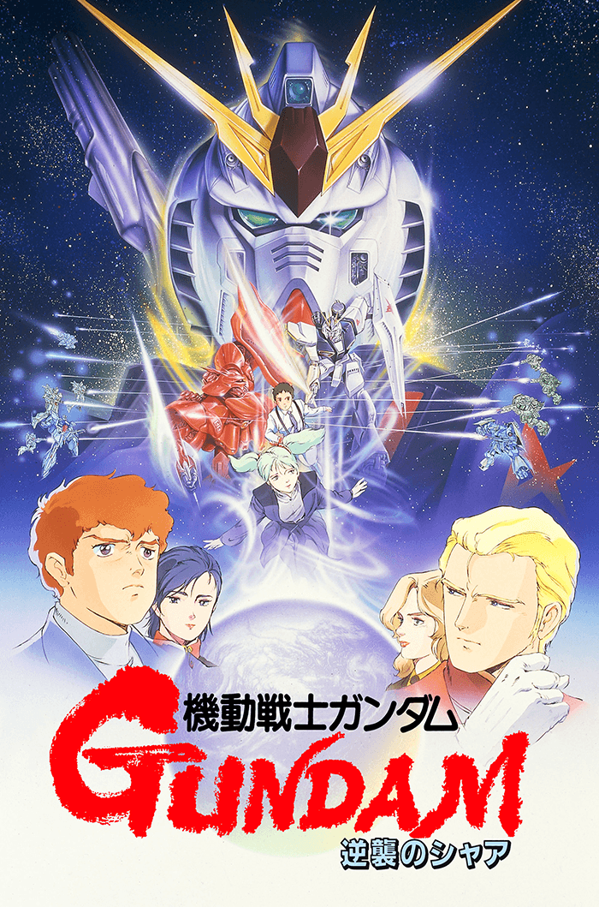
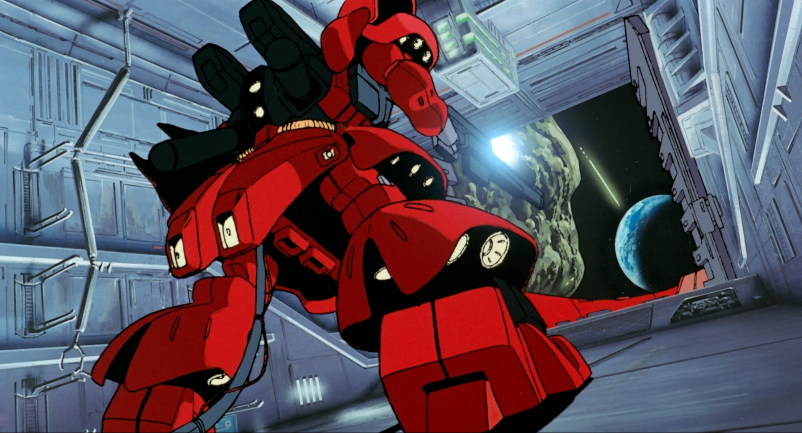
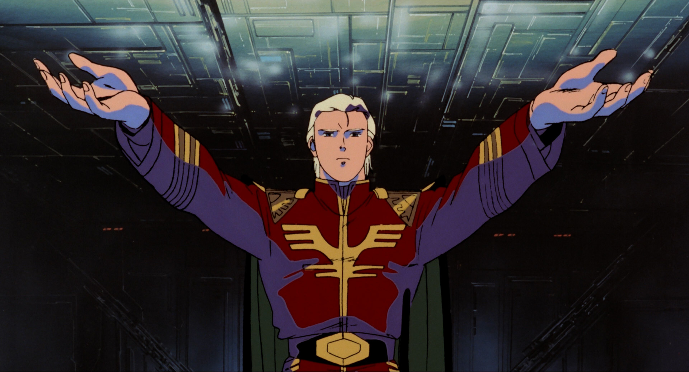
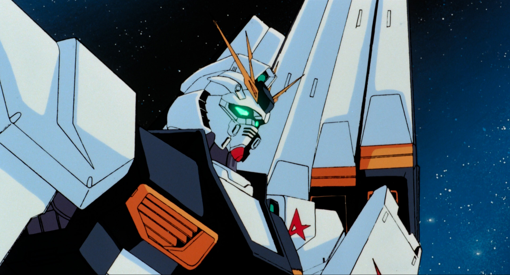
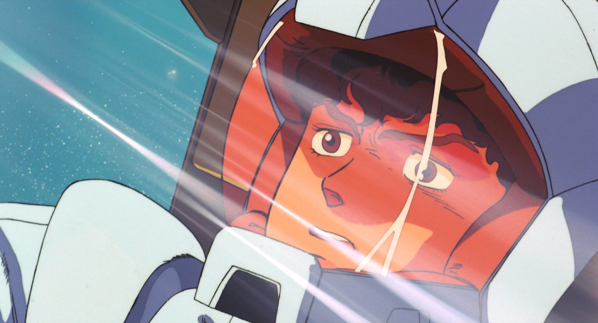
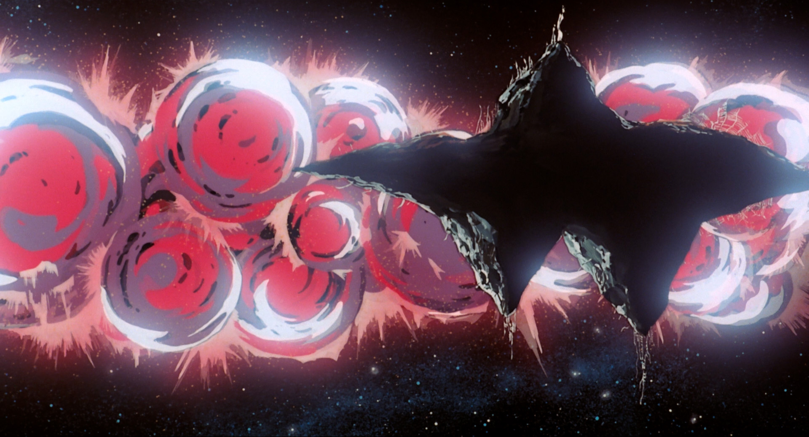
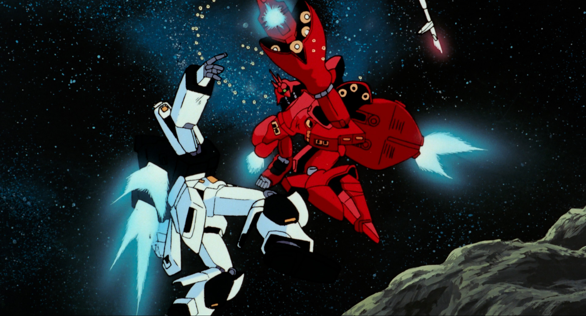

Production Information
In the middle of the sequel series MOBILE SUIT GUNDAM ZZ, series director Yoshiyuki Tomino was asked to create the first original theatrical film to cap off the end of the Gundam saga that showcased the climax of the now iconic rivalry between Amuro Ray and Char Aznable. Initially, Tomino's ideas for the film had a lot of things that his production committee desperately wanted to avoid, such as a lack of mobile suit battles, and the titualar main character being a married man. After a lot of back and forths, this film was a somewhat compromised version of both Tomino and the comittee's ideas.
The film released in Japanese theaters on March 12, 1988, and was a very successful release. It grossed over 1.16 billion yen in its initial run; outperforming the likes of Katsuhiro Otomo's AKIRA and thus became the first ever film in franchise history to gross over 1 billion yen in theatrical earnings.
There is a specific release order that the Gundam franchise follows in order to get to this film.
First is MOBILE SUIT GUNDAM (1979).
Second is MOBILE SUIT ZETA GUNDAM (1985).
Third is MOBILE SUIT GUNDAM ZZ (1986).
Release Date: March 12,1988
Director: Yoshiyuki Tomino
Studio: Sunrise
STORY
It is the year UC (Universal Century) 0093, and Char Aznable, having anncounced the revival of Neo Zeon, rebels against the Earth Federation government. He initiates a plan to force humanity off the planet it has corrupted. The Londo Bell, an external Earth Federation unit led by Amuro Ray and Bright Noa, fights desperately to stop Char's plan. As this unfolds, Bright's son, Hathaway Noa is captivated by a young girl named Quess Paraya, who is swayed by Char's charisma and defects to his side. With personal destinies and old rivalries intertwined, the conflict converges on the asteroid base AXIS. As it descends towards Earth, the final battle between Amuro and Char finally begins.
CAST AND CREDITS
Director: Yoshiyuki Tomino
Mechanical Design: Yutaka Izubuchi, Hideaki Anno, Mika Akitaka
Character Design: Hiroyuki Kitazume
Soundtrack: Shigeaki Saegusa
Storyboard: Yoshiyuki Tomino
Script: Yoshiyuki Tomino
Animation Directors: Shinichirou Minami, Kirasaka Yamada, Mitsuo Iso, Yoshinobu Inano, Takatsuna Senba, Hiroyuki Kitazume, Hidetoshi Oomori
Assistant Director: Shinji Takamatsu
IMAGE GALLERY





